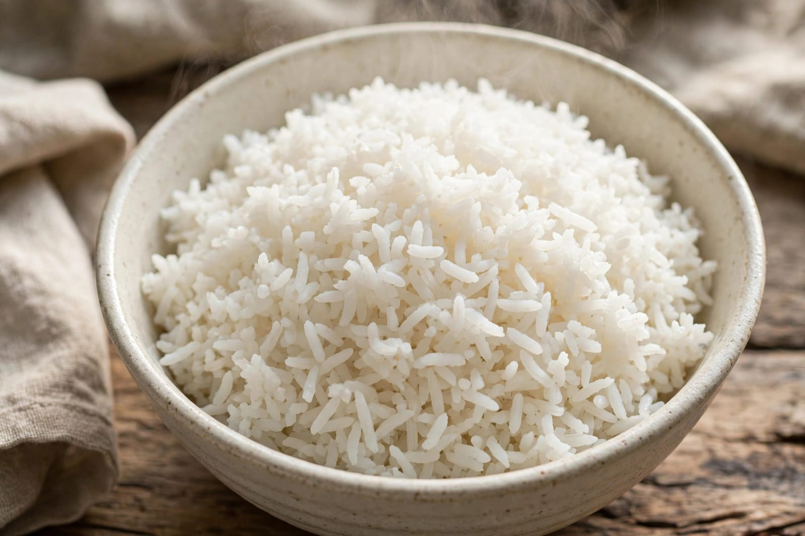
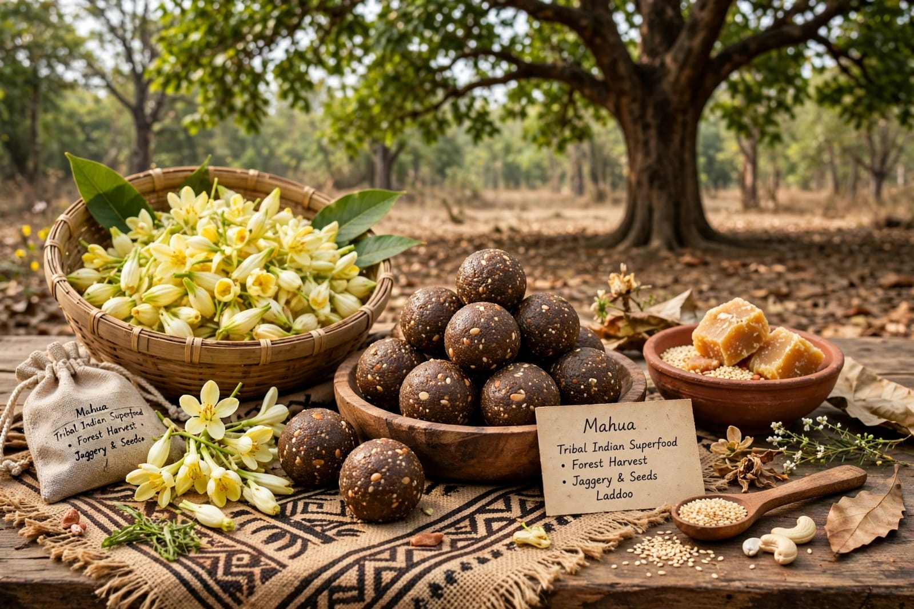
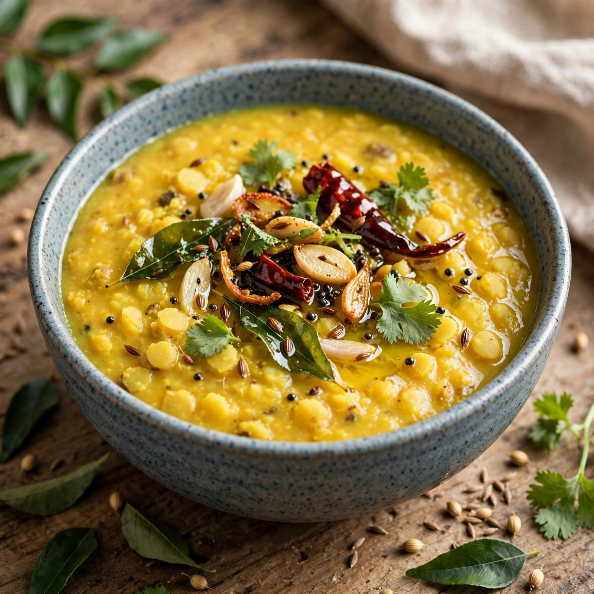

About Karma Festival
Karma is a traditional tribal festival celebrated in several parts of central and eastern India. It is especially associated with communities such as the Oraon, Munda, Baiga and other tribal groups. The festival is connected with nature, agriculture and community life. It is celebrated with prayers, traditional music, dancing and gatherings.
An important part of the festival is the worship of the Karma tree. A branch of the Karma tree is traditionally brought to the village and placed at the centre of the celebration. People offer prayers and seek blessings for happiness, prosperity and a good agricultural season. The tree is respected as a symbol connected with nature and fertility.
During the festival, people wear traditional clothes and participate in group dances and songs. Traditional drums and other musical instruments are played throughout the celebrations. Families and communities come together to share food and enjoy cultural activities. Karma Festival represents the close relationship between tribal communities, nature, agriculture and their traditional way of life.
Special Foods

Rice
Rice is an important staple food prepared during traditional celebrations.

Mahua
Mahua flowers are traditionally used in different food preparations by tribal communities.

Dal
Dal is a common traditional food served with rice during festive meals.